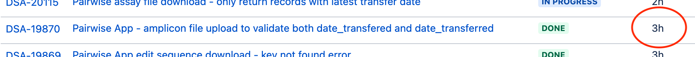

layout: false class: center, middle, inverse ## Data Quality and *Great Expectations* ### August 2021 --- .left-column[ ## Agenda <img src="./images/sunrise.png" width="180"> ] .right-column[ ### Data Quality Control with *Great Expectations* * Define the Problem. * Do *we* have a problem? * What should we do about it? * How does *Great Expectations* help? * Next steps. ] -- .right-column[ *I hope to demonstrate* * We do have "data problems". * *Great Expectations* and other tools can help. * But it's about process and habits as much as tools. ] --- .left-column[ ## Defining The Problem Data Quality ] .right-column[ ## What is the problem? ### Claim: #### *“When users notice data issues before data owners, trust in the data erodes!”* ] -- .right-column[ Example 1: SeqUR data contains illegal characters ```shell curl -q -X POST -H "Authorization: bearer $TOKEN" \ -H "Content-Type: application/json" \ -o cau_edit_protein_all.fa \ -d '{"datasources":["cau_edit"]}' $URL ``` ] -- .right-column-up[ Downloaded data does not behave correctly when used: ```shell makeblastdb -in cau_edit_protein_all.fa -dbtype prot ... Bad char [0xE2] in string at byte 58 ``` ] --- .left-column[ ## Defining The Problem Data Quality ] .right-column[ ## “When users notice data issues before data owners, trust in the data erodes!” Example 2: Pairwise DB column typo ```shell SELECT * FROM TABLE SELECT * FROM information_schema.columns WHERE table_schema = 'wisedb' AND table_name = 'amplicon'; ``` ] -- .right-column-up[ Compare the `amplicon` table with the other 19 tables: ```shell CREATE TABLE wisedb.amplicon ( id integer NOT NULL, ... date_transfered text, # <-- Typo, and not VARCHAR ... ); ``` ```shell CREATE TABLE wisedb.copy_number ( id integer NOT NULL, ... date_transferred character varying, ... ); ``` ] --- .left-column[ ## Defining The Problem Data Quality ] .right-column[ ## “When users notice data issues before data owners, trust in the data erodes!” Example 3: Field Ready tool returns empty Workplan data ```shell SELECT DISTINCT inventorybarcode AS BARCODE, rmworkplanid AS WP, ... ``` ] -- .right-column-up[ A maintenance event resulted in an empty query. Users are rightly suspicious of the tool showing empty fields. ] --- .left-column[ ## Defining The Problem Data Quality ] .right-column[ ## It's not just GDS, or DSA, or BCS ### Genome Biology, August 2016 ] .right-column[ ### Gene name errors are widespread in the scientific literature https://genomebiology.biomedcentral.com/articles/10.1186/s13059-016-1044-7 ] -- .right-column-up[ *The spreadsheet software Microsoft Excel, when used with default settings, is known to convert gene names to dates and floating-point numbers. A programmatic scan of leading genomics journals reveals that **approximately one-fifth of papers with supplementary Excel gene lists contain erroneous gene name conversions**.* ] --- .left-column[ ## Defining The Problem Data Quality ] .right-column[ ## It's not just GDS, or DSA, or BCS ### PLOS computational Biology, **July 30, 2021** ### Gene name errors: Lessons not learned https://journals.plos.org/ploscompbiol/article?id=10.1371/journal.pcbi.1008984 ] -- .right-column-up[ We hypothesized that such errors in supplementary files might diminish after a report in 2016 highlighting the extent of the problem. To assess this, we performed a scan of supplementary files published in PubMed Central **from 2014 to 2020**. Overall, gene name errors **continued to accumulate unabated in the period after 2016**. An improved scanning software we developed identified gene name errors in **30.9% (3,436/11,117) of articles** with supplementary Excel gene lists; a figure significantly higher than previously estimated. This is due to gene names being converted not just to dates and floating-point numbers, but also to internal date format (five-digit numbers). **These findings further reinforce that spreadsheets are ill-suited to use with large genomic data.** ] --- .left-column[ ## Defining The Problem Data Quality ] .right-column[ ## What then is the cost of "data issues"? ] -- .right-column[ ### The easiest answer is *loss of time*. It takes time to find and resolve application issues related to data.  ] -- .right-column-up[ ### The more important answer is loss of *trust* Our tools guide human decision making. ] -- .right-column-up[ ## Our humans need to trust in data! ] --- .left-column[ ## Tools and Solutions Data Quality ] .right-column[ ## Addressing data quality problems So what can we do to improve data QC? ] -- .right-column-up[ I'm about to start talking about **tools.** - **Great Expectations** (Python) - Data Validator (R) - JSONSchema (Python) - pydqc (Python) - ... more ... ] -- .right-column-up[ But tools without process and habits don't go very far. ] -- .right-column-up[ ## How many of us *think* in terms of "Test Driven Development"? ] -- .right-column[ ...in your code? ] -- .right-column-up[ ...in your data? (It's hard for me too.) ] --- .left-column[ ## Tools Data Quality ] .right-column[ ## Introducing Great Expectations For the purposes of this talk, let's focus on one particular tool, *Great Expectations*. <img style="padding: 0 0px;" src="./images/great-expectations.png" width="600"> ] --- .left-column[ ## Tools Data Quality ] .right-column[ ## Great Expectations (GE) Key Features - Expectations (assertions about data) - Data profiling (start with existing data) - Data validation - **Data documentation** (*important*) ] -- .right-column-up[ What does GE *NOT* do? - GE is NOT a pipeline execution framework (Airflow, Dagster) - GE is NOT a data versioning tool (Quilt) ] -- .right-column[ ### GE would be *integrated into workflows as QC steps* ] --- .left-column[ ## An Example The Pairwise Collaboration ] .right-column[ ## The Pairwise Collaboration Consider data coming from our collaborators at Pairwise. <img style="padding: 0 0px;" src="./images/pairwise.png" width="600"> ] --- .left-column[ ## An Example The Pairwise Collaboration ] .right-column[ ## The Pairwise Collaboration - Pairwise staff drops a file into S3 - S3 Event triggers Lambda - Lambda loads RDS (no data QC) <img style="padding: 0 0px;" src="./images/pairwise-trust.png" width="600"> ] -- .right-column-up[ ### How can we validate incoming data from Pairwise? ...*before* we load it into our RDS database! ] --- .left-column[ ## An Example The Pairwise Collaboration ] .right-column[ ## Adding validation with *expectations* See the [Glossary of Expectations](https://docs.greatexpectations.io/docs/reference/glossary_of_expectations/) One way to start is with a sample data set. *(I'm skipping past installation and initial configuration.)* ] -- .right-column[ Start with "known good" `amplicon.csv` file ```shell great_expectations suite scaffold amplicon.demo ``` This opens a [Jupyter Notebook](http://localhost:8889/lab/tree/great_expectations/uncommitted/scaffold_amplicon.demo.ipynb) *(See GE Scaffold Notebook)* ] --- .left-column[ ## An Example The Pairwise Collaboration ] .right-column[ ## Adding validation with *expectations* Now we have a starter set of expectations with which we can test new data, as well as **data definition documentation**. Expectations JSON: ```shell > head -n 7 great_expectations/expectations/amplicon/demo.json { "data_asset_type": "Dataset", "expectation_suite_name": "amplicon.demo", "expectations": { "expectation_type": "expect_table_columns_to_match_ordered_list", "kwargs": { ... ``` ### Goal: Ship data expectations together with pipelines. ] --- .left-column[ ## An Example The Pairwise Collaboration ] .right-column[ ## Adding validation with *expectations* Now that we have our expectations, let's examine **bad data**. ] -- .right-column[ Let's make `amplicon-bad.csv` with `Construct = NULL` and an unexpected `NGS_Assay`. ```shell Soy,CKX3; GM-CKX9,NGSAS116,,LbCas12a-Cutter,... Soy,CKX3; GM-CKX9,NGSAS172,pWISE1335,LbCas12a-Cutter,... ``` ] .right-column-up[ ### **Validate** the file using a GE **Checkpoint** Then see the resulting *documentation*. ### Goal: Share data documentation with all human stakeholders. *(See GE Checkpoint Notebook)* ] --- .left-column[ ## An Example The Pairwise Collaboration <img src="./images/checkpoint.jpg" width="180"> ] .right-column[ ## Adding QC to the existing AWS Lambda #### We now know how to develop *data expectations* #### And *validate* data using *checkpoints* ] -- .right-column-up[ #### Apply this to the Pairwise AWS S3 Lambda. ] .right-column-up[ ```shell @@ -101,6 +103,17 @@ def db_update(event): tmp_file, usecols=columns, skip_blank_lines=True, names=columns, header=0 ) + # This is the data expectations suite + with open(f"{table}.json") as fd: + suite = json.load(fd) + + df = ge.dataset.PandasDataset(data, expectation_suite=suite) + result = df.validate() + + if not result.success: + notify(event, context, message="Data validation failed") + return False + logger.info("Saving data to {os.getenv('dbname')}:%s", table) logger.info(data.head()) ``` ] --- .left-column[ ## An Example The Pairwise Collaboration ] .right-column[ ## What is the value added? What happens when bad data *isn't* detected? ] -- .right-column-up[ Sometimes the data import will fail, leading to - ... time lost to stopped progress - ... time lost to investigative meetings - ... time lost to support, dev, repair - ... increased technical debt in code and data ] -- .right-column-up[ Worse, sometimes the import will *succeed*, leading to - ... delayed detection of data problems - ... increasing the total cost of the above scenarios ] -- .right-column-up[ ### And worst of all, wrong decision making! ] --- .left-column[ ## An Example The Pairwise Collaboration <img src="./images/collaboration.png" width="180"> ] .right-column[ ## What is the value added? Thus, adding data quality control steps to pipelines - Ensures reliable operation of pipelines - Lowers operational risk ] -- .right-column[ But specific to *Great Expectations* - Enables the QC checks **AND** - Provides documentation for stakeholders This shared documentation and the communication it represents is a particular strength of *Great Expectations* that other data QC tools lack. ] --- .left-column[ ## Process Tools are just tools ] .right-column[ ## Beyond just QC tooling We've seen risk related to **data problems** ] -- .right-column-up[ We've seen an example of **Great Expectations** - Powerful tool for developing **data tests** - Important integration with **data documentation** ] -- .right-column[ Other tools exist in Bayer Crop Science - JSONSchema (RCE team) - Talend ] -- .right-column[ It's important to **integrate the tools** into daily practice. ] --- .left-column[ ## Process Tools are just tools ] .right-column[ ## Incorporate testing as a habit *Practicing* test driven development, to make it habitual. #### We know we need to test software ] -- .right-column[ ## Test **data** too! ] --- layout: false class: center, middle # Thank You!